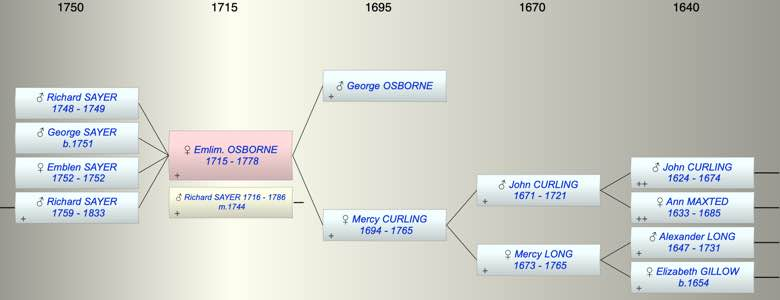

| [Index] |
| Emlim. Emblem OSBORNE (1715 - 1778) |
|  |
| b. 1715 at Lydden |
| m. 24 Feb 1744 Richard SAYER (1716 - 1786) at St Laurence |
| d. 27 Feb 1778 at St Laurence aged 63 |
| Parents: |
| George OSBORNE |
| Mercy CURLING (1694 - 1765) |
| Siblings (2): |
| Mercy OSBORNE (1720 - ) |
| Elizabeth OSBORNE (1721 - ) |
| Children (4): |
| Richard SAYER (1748 - 1749) |
| George Osborn SAYER (1751 - ) |
| Emblen SAYER (1752 - 1752) |
| Richard SAYER (1759 - 1833) |
| Grandchildren (1): |
| Frances Mary SAYER (1792 - ) |
| Events in Emlim. Emblem OSBORNE (1715 - 1778)'s life | |||||
| Date | Age | Event | Place | Notes | Src |
| 1715 | Emlim. Emblem OSBORNE was born | Lydden | Note 1 | ||
| 24 Feb 1744 | 29 | Married Richard SAYER (aged 28) | St Laurence | recorded as Emblem ex FMP PR | |
| 1748 | 33 | Birth of son Richard SAYER | St Laurence | Note 2 | |
| 1749 | 34 | Death of son Richard SAYER (aged 1) | St Laurence | Note 3 | |
| 1751 | 36 | Birth of son George Osborn SAYER | St Laurence | Note 4 | |
| 1752 | 37 | Birth of daughter Emblen SAYER | St Laurence | Note 5 | |
| 1752 | 37 | Death of daughter Emblen SAYER | St Laurence | ||
| 1759 | 44 | Birth of son Richard SAYER | St Laurence | Note 6 | |
| 1765 | 50 | Death of mother Mercy CURLING (aged 71) | Ramsgate | Note 7 | |
| 27 Feb 1778 | 63 | Emlim. Emblem OSBORNE died | St Laurence | Note 8 | |
| Personal Notes: |
| Emblen, wife of Richard SAYER, died 27th February 1778 aged 62 years. Also Emblen, their daughter, died 25th January 1771 aged 19 years. *Also Richard, son of above, died in infancy. Also the above Richard Sayer died 6th December 1786 aged 71 years. *Also 4 grandchildren, viz: Ann aged 4 years, Ann, Stead, and George Joshua died in infancy. ex St Laurence MIs |
| Created on a Mac™ using iFamily for Mac™ on 8 Oct 2023 |